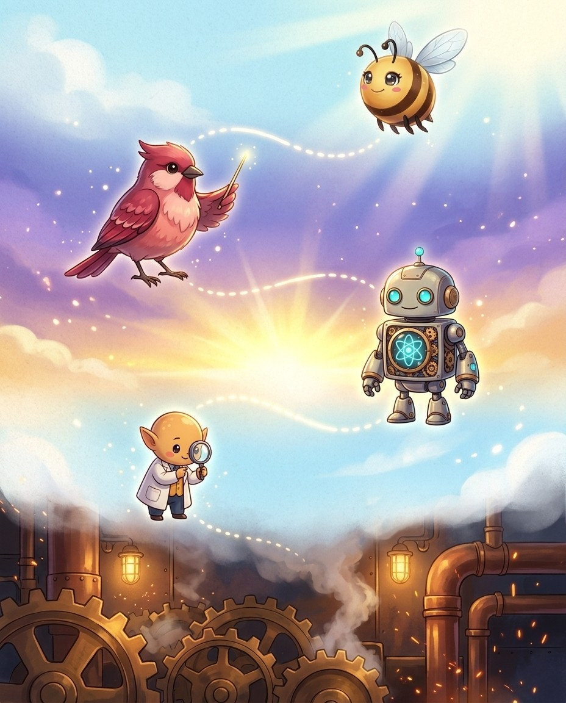
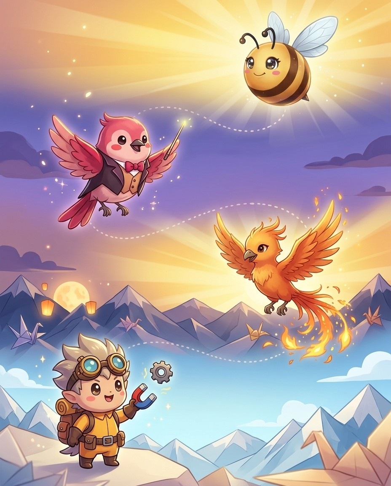
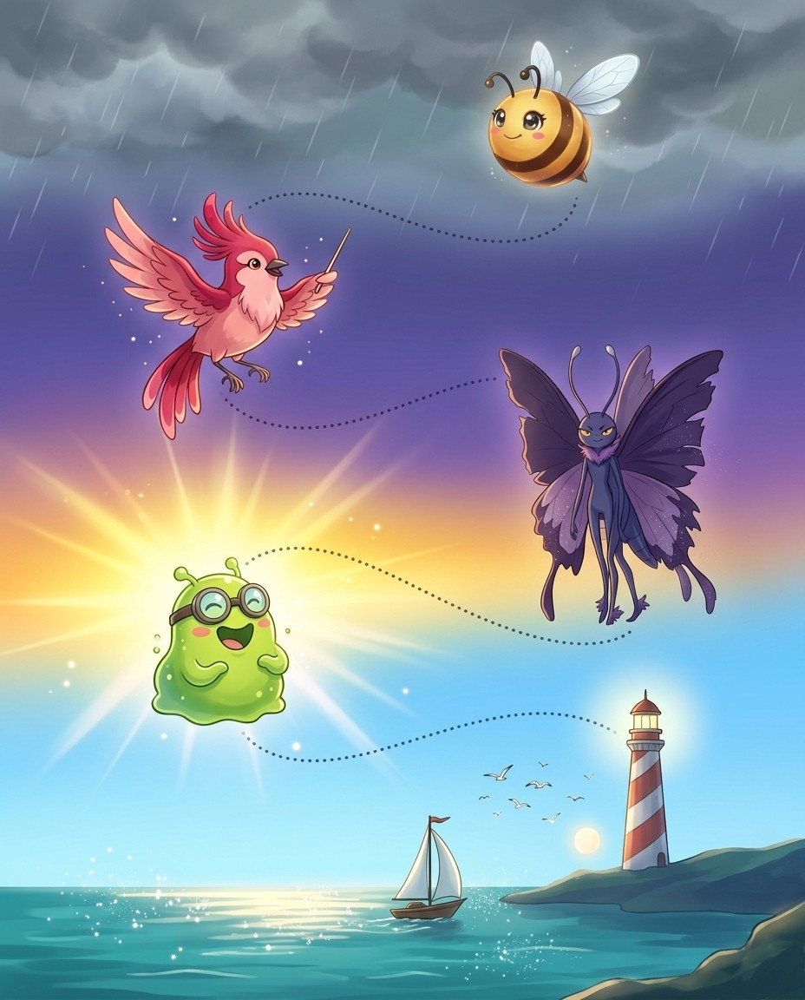
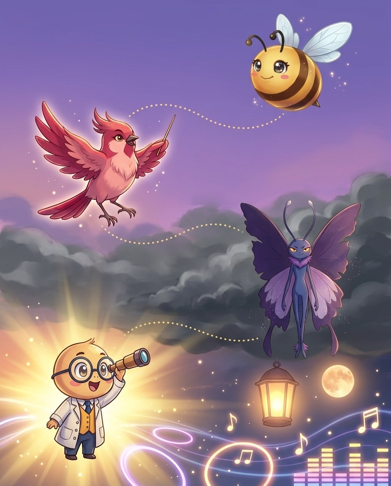
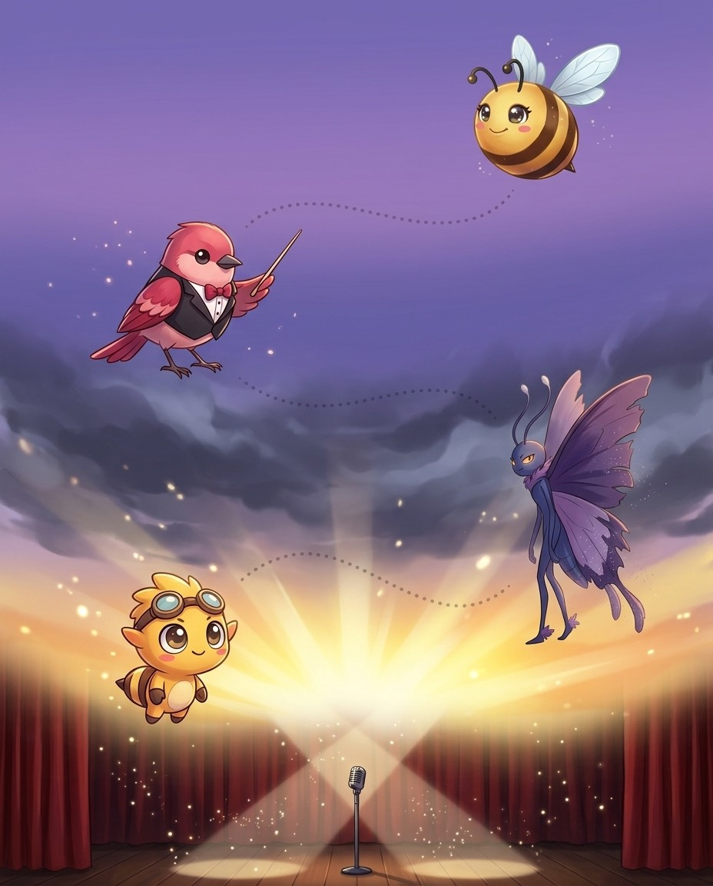
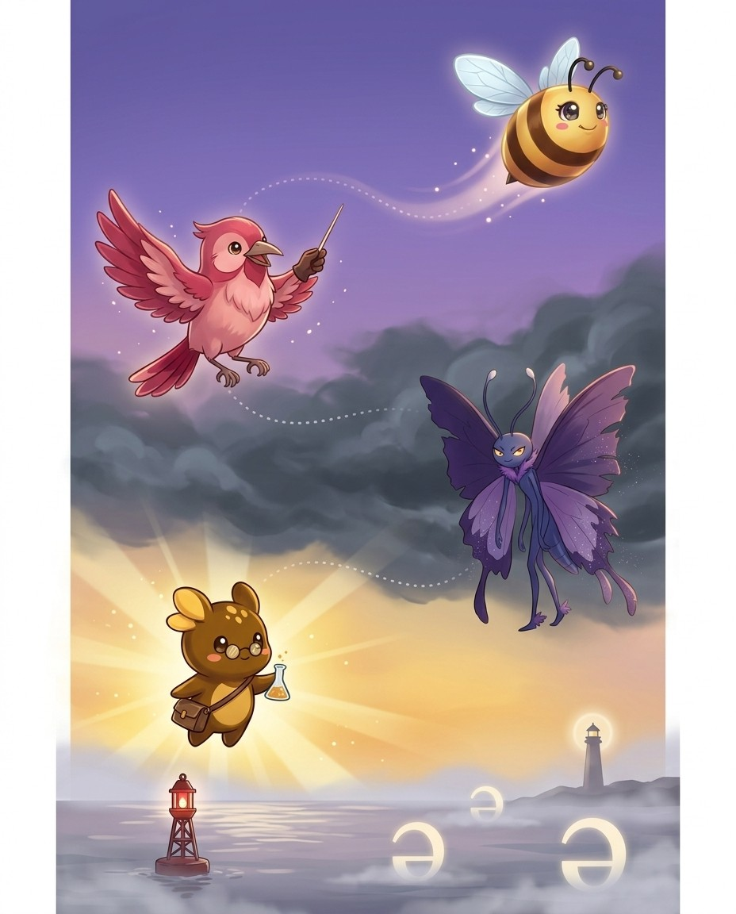

Assimilation — why prefixes change their last letter
📍 the Engine Room

BizzyYour general course taught you that a d changes shape before different letters. What it did not tell you is that every Latin prefix does the same thing, and that…
MaestroLatin speakers did what all speakers do — they took the easy path. Saying in possible is awkward, so the n slid forward to become m, giving impossible. In legible…
AtomHere is the payoff. Accommodate is a d plus commodus. The prefix a d becomes a c before the c, giving two c letters, and the root already had two…
ACCOMMODATE
ScopeyFour prefixes do most of the work. I n becomes i m, i l or i r. S u b becomes s u c, s u f, s u g,…
🔊 narrated in the appturn the page — the whole trick, explained →
Bizzing Bee · The Word Factory4
Chapter 1 · Assimilation — why prefixes change their last…The idea · ★★★
The big idea
The general course teaches this for ad- alone, but the same machinery governs every Latin prefix, and it explains most of the doubled letters in English. When a prefix ending in a consonant meets a root starting with a different one, Latin reshaped the prefix's final letter to match — and the result is two identical letters. Once you can see the prefix, you know exactly which letter doubles and why, instead of memorising each…
The pro move
IMMARCESCIBLE
Heard. im-ar-SESS-ih-bul — unfading
Parse. in- (not) + marcescere (to wither) + -ible
Assimilation. in- before m becomes im-, so the two m letters are prefix plus root
Spell. I M M A R C E S C I B L E
Family. marcescent — withering, from the same root
The four families
in- meaning not or into becomes im- before b, m, p (impossible, immature), il- before l (illegible, illuminate), ir- before r (irregular, irascible). sub- becomes suc- suf- sug- sup- sur- (succumb, sufficient, suggestion, suppress, surreptitio…
This is where doubled letters come from
Almost every awkward double in a Latin-derived word is a prefix meeting a root. Accommodate is ad plus commodus, so the double c is the assimilated prefix and the double m belongs to the root — which is exactly why it has two of each. Annihila…
Why some words do not double
The prefix only assimilates when it has to. Before a vowel it stays whole: adapt, adopt, adequate, inept, inane. Before certain consonants it simply drops its final letter without doubling: aspire is ad plus spirare, not adspire or asspire. So…
Using it at the microphone
This is the single most useful structural insight in the course, because it turns spelling into arithmetic. Hear a long Latin word, find the prefix, find the root, and the join tells you the doubling. Our core library holds 1,356 words that be…
Vex alert
A prefix reshapes its final consonant to match what follows. in- becomes im- il- ir-, sub- becomes suc- suf- sug-, ad- …
Sound trap
immanent sounds like imminent — at the mic, always ask for the meaning.
Check yourself
Book closed: immarcescible · surreptitious · accommodate, out loud, full words. At this level, almost right is still an elimination.
💬
Bee Break · someone said it better
“Dwell on the beauty of life. Watch the stars, and see yourself running with them.”
The Word Map gates this stop at 90%. That is five of six, minimum. Circle and verify. Germy's power is Endless Engine — borrow it.
1. Which of these is the big idea of “Assimilation — why prefixes change their last letter”?
ALatin had a whole verb class for beginning to be something: -escere, called the inchoative.
BKnowing eight loanword groups is not the same as being able to use them.
CMalay was the trade language of the whole East Indies, so English took its Southeast Asian voca…
DThe general course teaches this for ad- alone, but the same machinery governs every Latin prefi…
2. Which word belongs to this chapter's family?
Aerubescent
Bparadigm
Ccaboose
Dimmarcescible
3. The card “The four families” says…
Ain- meaning not or into becomes im- before b, m, p (impossible, immature), il- before l (illegi…
BThis is the single most useful structural insight in the course, because it turns spelling into…
CThe prefix only assimilates when it has to. Before a vowel it stays whole: adapt, adopt, adequa…
DAlmost every awkward double in a Latin-derived word is a prefix meeting a root. Accommodate is …
4. “A prefix reshapes its final consonant to match what follows. in- becomes im- il- ir-, sub- becomes suc- suf- sug-, ad- becomes ac- af- ag- al- ap- ar-” — which word is this hook about?
Aaccommodate
Balliteration
Cimmarcescible
Dsurreptitious
Dictation round
Hand this page to anyone nearby. They read the words from the answer key (Ch. 1 dictation, at the back) — you write, no peeking.
8. use of the same consonant at the beginning of each stressed syllable in a l…
9. capable of being corrected or set right
10. a security pledged for the repayment of a loan
Down
1. is to do a kindness or a favor to oblige
3. make lighter or brighter
4. kill in large numbers
5. is hard to read or decipher because of poor handwriting
6. is easily provoked to anger
7. establish or strengthen as with new evidence or facts
✨
Bee Break · simile of the page
a memory like a goldfish
forgetting things almost instantly
Bizzing Bee · The Word Factory10
Chapter 2 · Stacking combining forms — how the longest wo…Story · ★★★
2
How Words Are Built
Stacking combining forms — how the longest words are built
📍 the Paper Mountains

BizzyThe longest words in your library are not harder than the short ones. They are just longer. Every one of them is a chain of small pieces with fixed spellings,…
MaestroHere is the habit to build. Do not start writing at the first letter. Break the word at its joints first, in your head, and only then spell the pieces…
OTORHINOLARYNGOLOGY
Phoenix FlameTake the longest word in your library. Pneumonoultramicroscopicsilicovolcanoconiosis. Break it. Pneumon, lung. Ultra, beyond. Microscopic, tiny. Silico, silica. Volcano. Coni, dust. Osis, a condition. It is a lung disease from…
PNEUMONOULTRAMICROSCOPICSILICOVOLCANOCONIOSIS
Magneto MaxThe connecting vowel is decided by the language of the pieces. Greek compounds join with o — ochlocracy, myrmecophagy, thermometer, dendrochronology. Latin compounds join with i — fossiliferous, cupriferous, insecticide,…
🔊 narrated in the appturn the page — the whole trick, explained →
Bizzing Bee · The Word Factory11
Chapter 2 · Stacking combining forms — how the longest wo…The idea · ★★★
The big idea
The longest words in the library are not harder than short ones; they are just longer. They are chains of combining forms, each with a fixed spelling, joined by a connecting vowel — o for Greek, i for Latin. The entire skill is finding the joints. Once a word is broken at its joints, you are spelling six familiar pieces in sequence rather than forty-five arbitrary letters, and the pieces recur across hundreds of other words.
The pro move
OTORHINOLARYNGOLOGY
Heard. oh-toh-rye-noh-lar-in-GOL-uh-jee
Joints. ot / o / rhin / o / laryng / o / logy
Parts. ous ear, rhis nose, larynx throat, logos study
Spell. O T O R H I N O L A R Y N G O L O G Y
Family. otology, rhinoplasty, laryngitis — every piece reappears
Find the joints first
Never spell a long word left to right. Break it at the connecting vowels first. Otorhinolaryngology becomes ot-o-rhin-o-laryng-o-logy: ear, nose, throat, study. Electroencephalogram becomes electr-o-en-cephal-o-gram. Psychopharmacology becomes…
Greek joins with o, Latin with i
This is the rule that decides the connectors. Greek compounds use o: ochlocracy, myrmecophagy, thermometer, dendrochronology. Latin compounds use i: fossiliferous, cupriferous, insecticide, verisimilitude. So if the pieces are Greek, put an o …
The showpieces come apart too
Pneumonoultramicroscopicsilicovolcanoconiosis is pneumon-o-ultra-microscopic-silic-o-volcan-o-coni-osis: lung, beyond, tiny, silica, volcanic, dust, condition. Floccinaucinihilipilification is flocci-nauci-nihili-pili-fication, four Latin word…
The pieces pay you back
The reason this is worth practising is reuse. Learn cephal, head, and you have cephalic, encephalogram, hydrocephalus, cephalopod, acephalous, cephalomancy. Learn laryng and you have laryngitis, laryngology, laryngoscope. Our core library hold…
Vex alert
Long scientific words are chains of morphemes, not memorised strings. Greek joins with o, Latin with i. Find the joints…
Check yourself
Book closed: pneumonoultramicroscopicsilicovolcanoconiosis · hippopotomonstrosesquippedaliophobia · floccinaucinihilipilification, out loud, full words. At this level, almost right is still an elimination.
🎈
Bee Break · idiom to drop at dinner
breathe down someone's neck
to watch someone so closely it makes them uncomfortable
Bizzing Bee · The Word Factory12
Chapter 2 · Stacking combining forms — how the longest wo…Practice · ★★★
hook: Long scientific words are chains of morphemes, not memorised strings. Greek joins with o, L…
Mr. Ortiz accused the class of ▁▁▁ when every book report suddenly sprouted five-syllable vocab…
the Paper Mountains
Bizzing Bee · The Word Factory14
Chapter 2 · Stacking combining forms — how the longest wo…Rapid round · ★★★
More ammo — one line each.
dendrochronology/deh-ndroh-kruh-NAH-luh-jee/ the science of dating events and variations in environment in f…
trichotillomania/trik-oh-til-oh-MAY-nee-uh/ an irresistible urge to pull out your own hair
radioimmunoassay/ray-dee-oh-ih-myoo-noh-AS-ay/ immunoassay of a substance that has been radioactively labeled
zenzizenzizenzic/zen-zee-zen-zee-ZEN-zik/ the eighth power of a number, in old arithmetic books
Lock them in
Pick 4 words from above. Say each one as you write it — three times, no shortcuts. The third copy is the one your hand remembers.
the Paper Mountains
Bizzing Bee · The Word Factory15
Chapter 2 · Stacking combining forms — how the longest wo…Checkpoint · ★★★
Brainiac · Champion of the Lab runs the checkpoint
Do you own the idea?
The Word Map gates this stop at 90%. That is five of six, minimum. Circle and verify. Brainiac's power is Blink Step — borrow it.
1. Which of these is the big idea of “Stacking combining forms — how the longest words are built”?
AThe longest words in the library are not harder than short ones; they are just longer.
BKnowing eight loanword groups is not the same as being able to use them.
CLatin had a whole verb class for beginning to be something: -escere, called the inchoative.
DMalay was the trade language of the whole East Indies, so English took its Southeast Asian voca…
2. Which word belongs to this chapter's family?
Acaboose
Bpneumonoultramicroscopicsilicovolcanoconiosis
Cparadigm
Derubescent
3. The card “Find the joints first” says…
ANever spell a long word left to right. Break it at the connecting vowels first. Otorhinolaryngo…
BThe reason this is worth practising is reuse. Learn cephal, head, and you have cephalic, enceph…
CPneumonoultramicroscopicsilicovolcanoconiosis is pneumon-o-ultra-microscopic-silic-o-volcan-o-c…
DThis is the rule that decides the connectors. Greek compounds use o: ochlocracy, myrmecophagy, …
4. “Long scientific words are chains of morphemes, not memorised strings. Greek joins with o, Latin with i. Find the joints and a 45-letter word becomes s” — which word is this hook about?
Ahippopotomonstrosesquippedaliophobia
Bpneumonoultramicroscopicsilicovolcanoconiosis
Cfloccinaucinihilipilification
Dhonorificabilitudinitatibus
Dictation round
Hand this page to anyone nearby. They read the words from the answer key (Ch. 2 dictation, at the back) — you write, no peeking.
1.
2.
Bizzing Bee · The Word Factory16
Chapter 2 · Stacking combining forms — how the longest wo…Game · ★★★
Germy's puzzle page
Scramble & rescue
I own this
Unscramble
Rescue the vowels
Bee Break · Atom's true fact
Atoms are so tiny that millions could fit across the width of a single human hair.
the Paper Mountains
Bizzing Bee · The Word Factory17
Chapter 3 · Hyphens, spaces and closed compoundsStory · ★★★
3
How Words Are Built
Hyphens, spaces and closed compounds
📍 the Wide Strait

Maestro · Vex is circlingStart with the thing that actually loses words on stage. A hyphen is not punctuation you can skip. You have to say it out loud. M i l l e,…
MaestroThe most reliable rule. When English borrows a whole phrase from another language, it keeps the punctuation that came with it. Porte monnaie. Mille feuille. Carton pierre. Loup garou. Cul…
GermyHsaing waing is a Burmese orchestra, and it is in your word list. H s a i n g, hyphen, w a i n g. An initial h s, which…
HSAING-WAING
Robo HelperOne prefix you can count on completely. Self always takes a hyphen. Self conscious. Self portrait. Self sabotage. Self mastery. Self sterile. Self support. If you hear self at the…
SELF-CONSCIOUS
🔊 narrated in the appturn the page — the whole trick, explained →
Bizzing Bee · The Word Factory18
Chapter 3 · Hyphens, spaces and closed compoundsThe idea · ★★★
The big idea
On a bee stage a hyphen is a letter: you have to say it, and getting it wrong loses the word. The rules are conventional rather than logical, but they are learnable. Borrowed French and Italian phrases keep the hyphens they arrived with. The prefix self- always takes one. English compounds tend to start open, become hyphenated, then close up entirely, so the answer depends on how old the compound is — and the dictionary of re…
The pro move
MILLE-FEUILLE
Heard. meel-FOY — a layered pastry
Origin. French mille feuilles, a thousand leaves
Rule. a borrowed French phrase keeps its hyphen; you must say hyphen aloud
Spell. M I L L E hyphen F E U I L L E
Family. porte-monnaie, carton-pierre — same rule
Say the hyphen
This is the practical point that matters most. At the microphone you spell a hyphenated word by naming it: m-i-l-l-e-hyphen-f-e-u-i-l-l-e. If you run the letters together without saying hyphen, you have misspelled the word. Practise saying it …
Borrowed phrases keep their hyphens
French and Italian phrases that entered English as units keep the punctuation they came with. Porte-monnaie, mille-feuille, carton-pierre, loup-garou, cul-de-sac, avant-gardism, mezzo-soprano, privat-docent from German. If the word is a phrase…
self- always, and the life cycle
The prefix self- is reliably hyphenated: self-conscious, self-portrait, self-sabotage, self-mastery, self-sterile, self-support. Beyond that, English compounds age. They start as two words, acquire a hyphen, and finally close up — to day becam…
When you genuinely cannot tell
Sometimes there is no derivable answer and the dictionary simply rules. In that case use what you do know: is it a foreign phrase? Then hyphen. Does it start with self-? Then hyphen. Is it an old, everyday English compound? Then probably close…
Vex alert
You must say the hyphen out loud. French phrase borrowings keep their hyphens; English compounds usually lose them over…
Check yourself
Book closed: self-conscious · absent-minded · avant-gardism, out loud, full words. At this level, almost right is still an elimination.
💬
Bee Break · someone said it better
“Feeling gratitude and not expressing it is like wrapping a present and not giving it.”
— William Arthur Ward, American writer of maxims
Bizzing Bee · The Word Factory19
Chapter 3 · Hyphens, spaces and closed compoundsPractice · ★★★
Say it. Spell it out loud. Write it.
🔊 every word has real audio in the app
self-conscious
/ S EH2 L F K AA1 N SH AH0 S / · /ˈsˌɛˌlˌfˌkˌææˌnˌʃˌɑˌs/
aware of yourself as an individual or of your own being and actions and thoughts
hook: You must say the hyphen out loud. French phrase borrowings keep their hyphens; English comp…
Feeling ▁▁▁ about her braces, she smiled shyly until her friends smiled back.
absent-minded
/ AB-snt-MYN-did / · /ˈæbsntˌmaɪndɪd/
Tending to forget things or not pay attention to what is happening around you because your …
hook: You must say the hyphen out loud. French phrase borrowings keep their hyphens; English comp…
The ▁▁▁ professor walked into class still wearing his pajama top.
avant-gardism
/ ah-vahn-GARD-iz-um / · /ɑvɑnˈɡɑrdɪzʌm/
The philosophy or practice of supporting and creating avant-garde art, ideas, or movements …
hook: You must say the hyphen out loud. French phrase borrowings keep their hyphens; English comp…
Her professor wrote his thesis on ▁▁▁ in 1920s Paris, where artists constantly broke every traditio…
porte-monnaie
/ port-moh-NAY / · /pɔrtmoʊˈneɪ/
A small purse or wallet designed specifically for carrying coins; a coin purse, borrowed di…
hook: You must say the hyphen out loud. French phrase borrowings keep their hyphens; English comp…
The antique dealer displayed a delicate Victorian ▁▁▁ made of beaded silk, explaining that wealthy …
mezzo-soprano
/ MET-soh-suh-PRAH-noh / · /ˈmɛtsoʊsəˌprɑnoʊ/
a soprano with a voice between soprano and contralto
hook: You must say the hyphen out loud. French phrase borrowings keep their hyphens; English comp…
The ▁▁▁'s rich, warm voice filled the opera house as she performed the role of the queen.
carton-pierre
/ kar-tohn-PYAIR / · /kɑrtoʊnˈpjɛr/
A type of papier-mâché material made from paper pulp, chalk, and other substances, molded t…
hook: You must say the hyphen out loud. French phrase borrowings keep their hyphens; English comp…
The ornate ceiling rosettes in the grand ballroom were crafted from ▁▁▁, fooling every visitor into…
the Wide Strait
Bizzing Bee · The Word Factory20
Chapter 3 · Hyphens, spaces and closed compoundsPractice · ★★★
Say it. Spell it out loud. Write it.
🔊 every word has real audio in the app
mille-feuille
/ meel-FOY / · /milˈfɔɪ/
A classic French pastry made of many thin, flaky layers of puff pastry alternated with crea…
hook: You must say the hyphen out loud. French phrase borrowings keep their hyphens; English comp…
The French bakery's ▁▁▁ had hundreds of flaky layers stacked with cream and fresh strawberries.
privat-docent
/ prih-VAHT-doh-sent / · /prɪˈvɑtdoʊsɛnt/
In European universities, especially in German-speaking countries, an unsalaried lecturer w…
hook: You must say the hyphen out loud. French phrase borrowings keep their hyphens; English comp…
The ▁▁▁ lectured at the university without receiving an official salary, relying solely on student …
hsaing-waing
/ SAING-waing / · /ˈsæɪŋwæɪŋ/
A traditional Burmese percussion ensemble centered around a circle of tuned drums, used to …
hook: You must say the hyphen out loud. French phrase borrowings keep their hyphens; English comp…
The ceremonial procession was led by musicians playing the ▁▁▁, Burma's traditional drum circle ense…
loup-garou
/ loo-gah-ROO / · /luɡɑˈru/
a monster able to change appearance from human to wolf and back again
hook: You must say the hyphen out loud. French phrase borrowings keep their hyphens; English comp…
The villagers bolted their doors at night, terrified that the ▁▁▁ prowling the forest would find its w…
hunky-dory
/ HUNK-ee-DOR-ee / · /ˈhʌnkiˌdɔri/
being satisfactory or in satisfactory condition
hook: You must say the hyphen out loud. French phrase borrowings keep their hyphens; English comp…
After the repairs were finished, the mechanic assured us that everything was ▁▁▁ with the engine.
cul-de-sac
/ K AH1 L D IH0 S AE2 K / · /ˈkˌɑˌlˌdˌɪˌsˌæɛˌk/
a passage with access only at one end
hook: You must say the hyphen out loud. French phrase borrowings keep their hyphens; English comp…
The children played safely in the ▁▁▁ because no through traffic ever came down the dead-end street.
the Wide Strait
Bizzing Bee · The Word Factory21
Chapter 3 · Hyphens, spaces and closed compoundsCheckpoint · ★★★
Scopey · Champion of the Lab runs the checkpoint
Do you own the idea?
The Word Map gates this stop at 90%. That is five of six, minimum. Circle and verify. Scopey's power is Mind Palace — borrow it.
1. Which of these is the big idea of “Hyphens, spaces and closed compounds”?
AKnowing eight loanword groups is not the same as being able to use them.
BOn a bee stage a hyphen is a letter: you have to say it, and getting it wrong loses the word.
CMalay was the trade language of the whole East Indies, so English took its Southeast Asian voca…
DLatin had a whole verb class for beginning to be something: -escere, called the inchoative.
2. Which word belongs to this chapter's family?
Aparadigm
Bcaboose
Cerubescent
Dself-conscious
3. The card “Say the hyphen” says…
AThis is the practical point that matters most. At the microphone you spell a hyphenated word by…
BFrench and Italian phrases that entered English as units keep the punctuation they came with. P…
CThe prefix self- is reliably hyphenated: self-conscious, self-portrait, self-sabotage, self-mas…
DSometimes there is no derivable answer and the dictionary simply rules. In that case use what y…
4. “You must say the hyphen out loud. French phrase borrowings keep their hyphens; English compounds usually lose them over time; self- always keeps one.” — which word is this hook about?
Aabsent-minded
Bself-conscious
Cavant-gardism
Dporte-monnaie
Dictation round
Hand this page to anyone nearby. They read the words from the answer key (Ch. 3 dictation, at the back) — you write, no peeking.
1.
2.
Bizzing Bee · The Word Factory22
Chapter 3 · Hyphens, spaces and closed compoundsGame · ★★★
Brainiac's puzzle page
Scramble & rescue
I own this
Unscramble
Rescue the vowels
✨
Bee Break · simile of the page
as neat as ninepence
perfectly tidy
the Wide Strait
Bizzing Bee · The Word Factory23
Chapter 4 · Doublets — one root, two arrivals, two spelli…Story · ★★★
4
How Words Are Built
Doublets — one root, two arrivals, two spellings
📍 the Word Junkyard
BizzyEnglish borrowed from French for six hundred years, and French itself changed during that time. So the same Latin word often arrived twice, at different dates, looking different. Those pairs…
MaestroThere is a third kind. One form was worn smooth by centuries of ordinary speech, the other was lifted straight out of written Latin much later by scholars. Fragilis gave…
BrainiacThe same split happened with c. Latin c before an a stayed c in Norman French and became c h in Parisian. So capitale, meaning property, gave English both cattle…
Aurum FormulaNorthern Norman French kept a Germanic w. Central Parisian French wrote g u instead. English took words from both, so we ended up with both. Ward and guard. Warranty and…
🔊 narrated in the appturn the page — the whole trick, explained →
Bizzing Bee · The Word Factory24
Chapter 4 · Doublets — one root, two arrivals, two spelli…The idea · ★★★
The big idea
English borrowed from French for six hundred years, and French itself changed during that time — so the same Latin root frequently arrived twice, at different dates, wearing different clothes. These pairs are called doublets, and they explain a great deal that otherwise looks random. Northern Norman French kept a w and a hard c; central Parisian French turned those into gu and ch. So one root produced guard and ward, guarante…
The pro move
CHATTEL
Heard. CHAT-ul — a movable possession
Doublet. cattle is the same Latin word, capitale, meaning property
Rule. Parisian French turned Latin c into ch, so cattle and chattel split
Spell. C H A T T E L
Family. capital, cattle, chattel — all from capitale
The w and gu pairs
Norman French kept a Germanic w; Parisian French wrote gu instead. So English got both. Ward and guard. Warranty and guarantee. Wile and guile. Warden and guardian. Wallop and gallop. William and Guillaume. If you meet a word with an unexpecte…
The c and ch pairs
Latin c before a became ch in Parisian French and stayed c in Norman. Cattle and chattel, from capitale. Catch and chase, from captiare. Cap and chief and chef, all from caput, a head. Castle kept its c; chateau took ch. Canal and channel. Can…
The learned versus popular pairs
A third kind of doublet: one form worn down by centuries of speech, the other taken straight from written Latin much later. Frail and fragile, both from fragilis. Sure and secure, from securus. Poison and potion, from potio. Reason and ration.…
Why this helps you spell
Doublets are a memory device with a reason inside it. If you know chattel is cattle, the double t stops being arbitrary. If you know guarantee is warranty, the gu makes sense. And when a pronouncer gives you the rarer member of a pair, the com…
Vex alert
The same Latin word often entered English twice: once through Norman French with a w or a hard c, once through Parisian…
Sound trap
guarantee sounds like guaranty · wile sounds like while — at the mic, always ask for the meaning.
Check yourself
Book closed: chattel · guarantee · warranty, out loud, full words. At this level, almost right is still an elimination.
🎈
Bee Break · idiom to drop at dinner
a penny for your thoughts
tell me what you are thinking
Bizzing Bee · The Word Factory25
Chapter 4 · Doublets — one root, two arrivals, two spelli…Practice · ★★★
Say it. Spell it out loud. Write it.
🔊 every word has real audio in the app
chattel
/ ch-A-t-uh-l / · /tʃˈætəl/
a movable item of personal property
hook: The same Latin word often entered English twice: once through Norman French with a w or a h…
In the historical novel, the characters debate whether a person could ever rightfully be treated as ▁▁▁.
guarantee
/ geh-ruh-NTEE / · /ɡɛrəˈnti/
a written assurance that some product or service will be provided or will meet certain spec…
hook: The same Latin word often entered English twice: once through Norman French with a w or a h…
There is no ▁▁▁ that they are not lying.
warranty
/ w-AW-r-uh-n-t-ee / · /wˈɔrənti/
is assurance
hook: The same Latin word often entered English twice: once through Norman French with a w or a h…
When the new laptop stopped working after a week, Mom used the ▁▁▁ to get it replaced for free.
fragile
/ FRA-juhl / · /ˈfrædʒəl/
easily broken or damaged or destroyed
hook: The same Latin word often entered English twice: once through Norman French with a w or a h…
The archaeologist handled the ▁▁▁ pottery shard with two fingers, knowing that a single wrong move could …
genteel
/ jehn-TEEL / · /dʒɛnˈtil/
marked by refinement in taste and manners
hook: The same Latin word often entered English twice: once through Norman French with a w or a h…
Despite living in a tiny apartment, the elderly woman maintained a ▁▁▁ lifestyle, always setting the tabl…
tradition
/ truh-DIH-shuhn / · /trəˈdɪʃən/
an inherited pattern of thought or action
hook: The same Latin word often entered English twice: once through Norman French with a w or a h…
Lighting candles at dinner was a beloved family ▁▁▁ passed down for four generations.
the Word Junkyard
Bizzing Bee · The Word Factory26
Chapter 4 · Doublets — one root, two arrivals, two spelli…Practice · ★★★
Say it. Spell it out loud. Write it.
🔊 every word has real audio in the app
treason
/ TREE-zuhn / · /ˈtrizən/
a crime that undermines the offender's government
hook: The same Latin word often entered English twice: once through Norman French with a w or a h…
The general was arrested and charged with ▁▁▁ after he plotted against his own country.
regard
/ rih-GARD / · /rɪˈɡɑrd/
To think of or consider someone or something in a certain way
hook: The same Latin word often entered English twice: once through Norman French with a w or a h…
Everyone in class ▁▁▁ Maya as the best artist in fourth grade.
guard
/ GAHRD / · /ˈɡɑrd/
a person who keeps watch over something or someone
hook: The same Latin word often entered English twice: once through Norman French with a w or a h…
The left ▁▁▁ was injured on the play.
ward
/ WAWRD / · /ˈwɔrd/
a person who is under the protection or in the custody of another
hook: The same Latin word often entered English twice: once through Norman French with a w or a h…
They put her in a 4-bed ▁▁▁.
chief
/ CHEEF / · /ˈtʃif/
a person who is in charge
hook: The same Latin word often entered English twice: once through Norman French with a w or a h…
chef
/ SHEHF / · /ˈʃɛf/
a professional cook
hook: The same Latin word often entered English twice: once through Norman French with a w or a h…
The talented ▁▁▁ created a magnificent five-course dinner that left every guest at the table speechless.
the Word Junkyard
Bizzing Bee · The Word Factory27
Chapter 4 · Doublets — one root, two arrivals, two spelli…Rapid round · ★★★
More ammo — one line each.
frail/FRAYL/ Weak, delicate, and easily broken or hurt.
cattle/KA-tuhl/ domesticated bovine animals as a group regardless of sex or age
reward/rih-WAWRD/ a recompense for worthy acts or retribution for wrongdoing
wile/WEYEL/ the use of tricks to deceive someone (usually to extract money …
guile/GEYEL/ shrewdness as demonstrated by being skilled in deception
catch/KACH/ a drawback or difficulty that is not readily evident
chase/CHAYS/ the act of pursuing in an effort to overtake or capture
royal/ROY-uhl/ belonging to or having to do with a king or queen
regal/REE-guhl/ belonging to or befitting a supreme ruler
gentle/JEH-ntuhl/ cause to be more favorably inclined; gain the good will of
poison/POY-zuhn/ any substance that causes injury or illness or death of a livin…
potion/POH-shuhn/ a medicinal or magical or poisonous beverage
secure/sih-KYUUR/ get by special effort
sure/SHUUR/ having or feeling no doubt or uncertainty; confident and assured
Lock them in
Pick 4 words from above. Say each one as you write it — three times, no shortcuts. The third copy is the one your hand remembers.
the Word Junkyard
Bizzing Bee · The Word Factory28
Chapter 4 · Doublets — one root, two arrivals, two spelli…Rapid round · ★★★
More ammo — one line each.
hostel/HAH-stuhl/ a hotel providing overnight lodging for travelers
hotel/hoh-TEHL/ a building where travelers can pay for lodging and meals and ot…
corps/KAWR/ an army unit usually consisting of two or more divisions and th…
shirt/SHURT/ a garment worn on the upper half of the body
skirt/SKURT/ cloth covering that forms the part of a garment below the waist
shatter/SHA-ter/ break into many pieces
scatter/SKA-ter/ a haphazard distribution in all directions
Lock them in
Pick 4 words from above. Say each one as you write it — three times, no shortcuts. The third copy is the one your hand remembers.
the Word Junkyard
Bizzing Bee · The Word Factory29
Chapter 4 · Doublets — one root, two arrivals, two spelli…Checkpoint · ★★★
Magneto Max · Speller of the Lab runs the checkpoint
Do you own the idea?
The Word Map gates this stop at 90%. That is five of six, minimum. Circle and verify. Magneto Max's power is Ice Cool — borrow it.
1. Which of these is the big idea of “Doublets — one root, two arrivals, two spellings”?
AEnglish borrowed from French for six hundred years, and French itself changed during that time …
BLatin had a whole verb class for beginning to be something: -escere, called the inchoative.
CKnowing eight loanword groups is not the same as being able to use them.
DMalay was the trade language of the whole East Indies, so English took its Southeast Asian voca…
2. Which word belongs to this chapter's family?
Aparadigm
Bchattel
Cerubescent
Dcaboose
3. The card “The w and gu pairs” says…
ALatin c before a became ch in Parisian French and stayed c in Norman. Cattle and chattel, from …
BNorman French kept a Germanic w; Parisian French wrote gu instead. So English got both. Ward an…
CA third kind of doublet: one form worn down by centuries of speech, the other taken straight fr…
DDoublets are a memory device with a reason inside it. If you know chattel is cattle, the double…
4. “The same Latin word often entered English twice: once through Norman French with a w or a hard c, once through Parisian French with a g or a ch. Guard” — which word is this hook about?
Aguarantee
Bfragile
Cwarranty
Dchattel
Dictation round
Hand this page to anyone nearby. They read the words from the answer key (Ch. 4 dictation, at the back) — you write, no peeking.
1.
2.
Bizzing Bee · The Word Factory30
Chapter 4 · Doublets — one root, two arrivals, two spelli…Game · ★★★
Scopey's puzzle page
Crossword
I own this
1
2
3
4
5
6
7
8
9
10
Across
2. To think of or consider someone or something in a certain way
5. a person who keeps watch over something or someone
6. is assurance
8. a written assurance that some product or service will be provided or will m…
9. a movable item of personal property
10. marked by refinement in taste and manners
Down
1. a crime that undermines the offender's government
3. a person who is under the protection or in the custody of another
4. easily broken or damaged or destroyed
7. an inherited pattern of thought or action
Bee Break · Phoenix Flame's true fact
The phoenix is a mythic bird said to burst into flame and be reborn from its own ashes.
Bizzing Bee · The Word Factory31
Chapter 5 · Heteronyms — same spelling, two pronunciationsStory · ★★★
5
How Words Are Built
Heteronyms — same spelling, two pronunciations
📍 the Vibe

BizzyA homophone sounds the same and is spelled differently. A heteronym is the opposite — spelled the same, sounds different, means different things. And it matters on a bee stage…
MaestroSo here is what you do. If the pronunciation sounds wrong for the word you had in mind, do not adjust your spelling — ask for the part of speech,…
Maestro · Vex is circlingSome heteronyms are two unrelated words that happen to collide. Tear, the water in your eye, and tear, to rip. Wind, the air, and wind, to turn a key. Bow,…
GlitchA big group ends in a t e, with a full vowel as a verb and a reduced one as an adjective. SEP uh rate the verb, SEP uh rut…
🔊 narrated in the appturn the page — the whole trick, explained →
Bizzing Bee · The Word Factory32
Chapter 5 · Heteronyms — same spelling, two pronunciationsThe idea · ★★★
The big idea
Heteronyms are the mirror image of homophones: same spelling, different sound and sense. They matter on a bee stage for one specific reason — the pronunciation you are given may not match the word you are thinking of, and the fix is to ask for the part of speech and the definition. English marks most of these pairs by stress, and there is a rule behind it: nouns take stress on the first syllable, verbs on the second.
The pro move
SEPARATE
Heard. SEP-uh-rut (adjective) or SEP-uh-rate (verb)
Same spelling. both are s-e-p-a-r-a-t-e
Strategy. the pronunciation differs but the spelling does not — so relax, and confirm the definition anyway
Spell. S E P A R A T E
Family. separation, separately
The stress rule
For dozens of two-syllable pairs, the noun stresses the first syllable and the verb the second. CON-duct the noun, con-DUCT the verb. RE-cord and re-CORD. PRO-ject and pro-JECT. SUB-ject and sub-JECT. PRE-sent and pre-SENT. RE-fuse the rubbish…
The -ate words
A large family of words ending -ate has a full vowel as a verb and a reduced one as an adjective or noun. SEP-uh-rate the verb against SEP-uh-rut the adjective. Also moderate, deliberate, intimate, laminate, alternate, appropriate, associate, …
The unrelated pairs
Some heteronyms are two entirely different words that collided. Tear the eye-water and tear the rip. Wind the air and wind the clock. Bow the ribbon and bow the greeting. Sow the seed and sow the pig. Lead the metal and lead the way. Dove the …
What to do at the microphone
This is a question strategy, not a spelling rule. If the pronunciation sounds wrong for the word you have in mind, ask for the part of speech and then for the definition. For the -ate and stress pairs the spelling is identical anyway, so nothi…
Vex alert
One spelling, two words. Stress usually marks the difference: a noun stresses the first syllable, a verb the second. As…
Sound trap
tear sounds like tier · bow sounds like bough — at the mic, always ask for the meaning.
Check yourself
Book closed: separate · moderate · deliberate, out loud, full words. At this level, almost right is still an elimination.
💬
Bee Break · someone said it better
“Fun is one of the most important and least appreciated ingredients in any successful venture.”
— Richard Branson, Entrepreneur and adventurer
Bizzing Bee · The Word Factory33
Chapter 5 · Heteronyms — same spelling, two pronunciationsPractice · ★★★
Say it. Spell it out loud. Write it.
🔊 every word has real audio in the app
separate
/ SEH-per-ayt / · /ˈsɛpəreɪt/
a separately printed article that originally appeared in a larger publication
hook: One spelling, two words. Stress usually marks the difference: a noun stresses the first syl…
Our teacher passed around a ▁▁▁, a single article reprinted from the big journal.
moderate
/ MAH-der-uht / · /ˈmɑdərət/
a person who takes a position in the political center
hook: One spelling, two words. Stress usually marks the difference: a noun stresses the first syl…
John ▁▁▁ the discussion.
deliberate
/ dih-LIH-ber-uht / · /dɪˈlɪbərət/
think about carefully; weigh
hook: One spelling, two words. Stress usually marks the difference: a noun stresses the first syl…
Take a moment to ▁▁▁ carefully before choosing which experiment to present at the fair.
intimate
/ IH-ntuh-muht / · /ˈɪntəmət/
someone to whom private matters are confided
hook: One spelling, two words. Stress usually marks the difference: a noun stresses the first syl…
She shared her secret plan only with her most ▁▁▁ friend.
laminate
/ LA-muh-nuht / · /ˈlæmənət/
a sheet of material made by bonding two or more sheets or layers
hook: One spelling, two words. Stress usually marks the difference: a noun stresses the first syl…
The teacher ▁▁▁ the colorful classroom posters so they would last through the entire school year withou…
alternate
/ AW-lter-nuht / · /ˈɔltərnət/
someone who takes the place of another person
hook: One spelling, two words. Stress usually marks the difference: a noun stresses the first syl…
When the lead actress fell ill, her ▁▁▁ stepped onto the stage and delivered a stunning performance.
the Vibe
Bizzing Bee · The Word Factory34
Chapter 5 · Heteronyms — same spelling, two pronunciationsPractice · ★★★
Say it. Spell it out loud. Write it.
🔊 every word has real audio in the app
appropriate
/ uh-PROH-pree-uht / · /əˈproʊpriət/
give or assign a resource to a particular person or cause
hook: One spelling, two words. Stress usually marks the difference: a noun stresses the first syl…
The mayor decided to ▁▁▁ part of the budget to build a new playground.
associate
/ uh-SOH-see-uht / · /əˈsoʊsiət/
a person who joins with others in some activity or endeavor
hook: One spelling, two words. Stress usually marks the difference: a noun stresses the first syl…
He had to consult his ▁▁▁ before continuing.
estimate
/ EH-stuh-muht / · /ˈɛstəmət/
an approximate calculation of quantity or degree or worth
hook: One spelling, two words. Stress usually marks the difference: a noun stresses the first syl…
The contractor gave the homeowners a detailed ▁▁▁ showing that repairing the roof would cost approximate…
graduate
/ g-r-A-j-uh-w-uh-t / · /ˈɡrædʒəwət/
one that has received an academic degree a diploma or a certificate
hook: One spelling, two words. Stress usually marks the difference: a noun stresses the first syl…
She ▁▁▁ in 1990.
predicate
/ PREH-duh-kayt / · /ˈprɛdəkeɪt/
in logic, the part of a statement that tells something about the subject
hook: One spelling, two words. Stress usually marks the difference: a noun stresses the first syl…
`Socrates is a man' ▁▁▁ manhood of Socrates.
syndicate
/ SIH-ndih-kuht / · /ˈsɪndɪkət/
a loose affiliation of gangsters in charge of organized criminal activities
hook: One spelling, two words. Stress usually marks the difference: a noun stresses the first syl…
In the mystery novel, brave detectives worked to expose the crime ▁▁▁ in the city.
the Vibe
Bizzing Bee · The Word Factory35
Chapter 5 · Heteronyms — same spelling, two pronunciationsRapid round · ★★★
More ammo — one line each.
present/PREH-zuhnt/ A gift given to someone, often for a birthday, holiday, or spec…
minute/my-NOOT/ Extremely small; tiny.
august/AH-guhst/ the month following July and preceding September
invalid/IH-nvuh-luhd/ someone who is incapacitated by a chronic illness or injury
conduct/KAH-nduhkt/ manner of acting or controlling yourself
refuse/ruh-FYOOZ/ food that is discarded (as from a kitchen)
produce/pruh-DOOS/ fresh fruits and vegetable grown for the market
content/KAH-ntehnt/ everything that is included in a collection and that is held or…
object/AH-bjehkt/ a tangible and visible entity; an entity that can cast a shadow
subject/suh-BJEHKT/ The topic or thing that people are talking, writing, or learnin…
project/PRAH-jehkt/ any piece of work that is undertaken or attempted
record/ruh-KAWRD/ information kept or saved so people can remember what happened
polish/PAH-lihsh/ the property of being smooth and shiny
tear/TEHR/ a drop of the clear salty saline solution secreted by the lacri…
Lock them in
Pick 4 words from above. Say each one as you write it — three times, no shortcuts. The third copy is the one your hand remembers.
the Vibe
Bizzing Bee · The Word Factory36
Chapter 5 · Heteronyms — same spelling, two pronunciationsRapid round · ★★★
More ammo — one line each.
wind/WEYEND/ air moving (sometimes with considerable force) from an area of …
bow/b-OW/ a knot formed by doubling a string into two loops
sow/SOW/ an adult female hog
lead/LEED/ To guide people or show the way.
live/LEYEV/ To be alive; not dead; having life or existence as opposed to b…
close/KLOHS/ the temporal end; the concluding time
dove/DUHV/ any of numerous small pigeons
wound/WOWND/ an injury to living tissue (especially an injury involving a cu…
Lock them in
Pick 4 words from above. Say each one as you write it — three times, no shortcuts. The third copy is the one your hand remembers.
the Vibe
Bizzing Bee · The Word Factory37
Chapter 5 · Heteronyms — same spelling, two pronunciationsCheckpoint · ★★★
Robo Helper · Speller of the Lab runs the checkpoint
Do you own the idea?
The Word Map gates this stop at 90%. That is five of six, minimum. Circle and verify. Robo Helper's power is Fast Forward — borrow it.
1. Which of these is the big idea of “Heteronyms — same spelling, two pronunciations”?
ALatin had a whole verb class for beginning to be something: -escere, called the inchoative.
BKnowing eight loanword groups is not the same as being able to use them.
CHeteronyms are the mirror image of homophones: same spelling, different sound and sense.
DMalay was the trade language of the whole East Indies, so English took its Southeast Asian voca…
2. Which word belongs to this chapter's family?
Aparadigm
Bcaboose
Cerubescent
Dseparate
3. The card “The stress rule” says…
AA large family of words ending -ate has a full vowel as a verb and a reduced one as an adjectiv…
BSome heteronyms are two entirely different words that collided. Tear the eye-water and tear the…
CThis is a question strategy, not a spelling rule. If the pronunciation sounds wrong for the wor…
DFor dozens of two-syllable pairs, the noun stresses the first syllable and the verb the second.…
4. “One spelling, two words. Stress usually marks the difference: a noun stresses the first syllable, a verb the second. Ask for the part of speech, not t” — which word is this hook about?
Aintimate
Bdeliberate
Cmoderate
Dseparate
Dictation round
Hand this page to anyone nearby. They read the words from the answer key (Ch. 5 dictation, at the back) — you write, no peeking.
1.
2.
Bizzing Bee · The Word Factory38
Chapter 5 · Heteronyms — same spelling, two pronunciationsGame · ★★★
Chapter 6 · Metathesis — the sounds that swapped placesStory · ★★★
6
How Words Are Built
Metathesis — the sounds that swapped places
📍 the Big Stage

BizzyMetathesis is when two sounds inside a word swap positions. It happens in every language, it happens most around r and l, and in English it has quietly rewritten a…
MaestroNostril is a lovely piece of hidden history. Old English nosthyrl meant nose hole — nose plus thyrel, a hole. The t h and the r traded places and the…
NOSTRIL
Maestro · Vex is circlingNow the ones that matter to you. Every pronunciation people get corrected for is metathesis in progress. Nuclear said as nucular. Comfortable as comfterble. Integral as intregal. Asterisk as asterix.…
AtomHere is a pair worth knowing. Through and thorough are the same Old English word, thurh. One kept the compressed form, one developed an extra syllable, and English decided they…
🔊 narrated in the appturn the page — the whole trick, explained →
Bizzing Bee · The Word Factory40
Chapter 6 · Metathesis — the sounds that swapped placesThe idea · ★★★
The big idea
Metathesis is the swapping of two sounds within a word, and it is one of the commonest ways English spellings drift away from their origins. It happens most around r and l. Sometimes the swap won and became the standard spelling, which is why some words look scrambled compared to their relatives. Sometimes it is still in progress, which is why the pronunciations people are corrected for — nucular, comfterble — are the same pr…
The pro move
NOSTRIL
Heard. NOSS-trul
Origin. Old English nosthyrl — nose plus thyrel, a hole
What happened. the th and the r traded places and the word compressed
Spell. N O S T R I L
Family. nose, thrill — thrill is the same thyrel, meaning to pierce
Swaps that won
Old English bridd became bird. thridda became third. hros became horse. Old English wæps became wasp. hæps became hasp. And nosthyrl became nostril. In each case the r or s moved and the new order became correct. So a word can look nothing lik…
Doublets made by metathesis
Sometimes both orders survived as separate words. Through and thorough are the same Old English word, thurh, with different vowel and stress development. Curd and crud are one word split by a swapped r. Tinsel and scintilla share a root. Wattl…
The swaps still in progress
The pronunciations people get corrected for are metathesis happening now. Nuclear said as nucular. Comfortable as comfterble. Integral as intregal. Cavalry as calvary. Asterisk as asterix. Espresso as expresso. Sherbet as sherbert. Jewelry as …
Why a speller must care
Because the pronouncer will say the word correctly and your ear may still hear the swapped version. Nuclear is n-u-c-l-e-a-r, and if you have said nucular all your life you will want to write it that way. Cavalry is horsemen, Calvary is the hi…
Vex alert
Two sounds trade places over time, usually around an r. That is why through and thorough differ, why nostril hides nose…
Sound trap
through sounds like threw · bird sounds like birred, burred — at the mic, always ask for the meaning.
Check yourself
Book closed: nostril · thorough · through, out loud, full words. At this level, almost right is still an elimination.
🎈
Bee Break · idiom to drop at dinner
rat race
an exhausting, competitive routine that never seems to end
Bizzing Bee · The Word Factory41
Chapter 6 · Metathesis — the sounds that swapped placesPractice · ★★★
Say it. Spell it out loud. Write it.
🔊 every word has real audio in the app
nostril
/ NAH-strihl / · /ˈnɑstrɪl/
either one of the two external openings to the nasal cavity in the nose
hook: Two sounds trade places over time, usually around an r. That is why through and thorough di…
The horse flared its ▁▁▁ and snorted loudly as the stranger approached.
thorough
/ THUR-oh / · /ˈθʌroʊ/
painstakingly careful and accurate
hook: Two sounds trade places over time, usually around an r. That is why through and thorough di…
Our accountant is ▁▁▁.
through
/ THROO / · /ˈθru/
having finished or arrived at completion
hook: Two sounds trade places over time, usually around an r. That is why through and thorough di…
comfortable
/ KUH-mfer-tuh-buhl / · /ˈkʌmfərtəbəl/
providing or experiencing physical well-being or relief (`comfy' is informal)
hook: Two sounds trade places over time, usually around an r. That is why through and thorough di…
After hiking through the muddy trail for six exhausting hours, the campers were finally ▁▁▁ sitting b…
integral
/ IH-ntuh-gruhl / · /ˈɪntəɡrəl/
In math, the total found by adding up many tiny parts; the reverse of a derivative.
hook: Two sounds trade places over time, usually around an r. That is why through and thorough di…
Practice is an ▁▁▁ part of becoming skilled at any instrument.
nuclear
/ NOO-klee-er / · /ˈnukliər/
(weapons) deriving destructive energy from the release of atomic energy
hook: Two sounds trade places over time, usually around an r. That is why through and thorough di…
Scientists debated whether ▁▁▁ energy could serve as a safe and reliable alternative to fossil fuels, giv…
the Big Stage
Bizzing Bee · The Word Factory42
Chapter 6 · Metathesis — the sounds that swapped placesPractice · ★★★
Say it. Spell it out loud. Write it.
🔊 every word has real audio in the app
interpret
/ ih-NTUR-pruht / · /ɪˈntʌrprət/
make sense of; assign a meaning to
hook: Two sounds trade places over time, usually around an r. That is why through and thorough di…
Can you ▁▁▁ what the poet meant by 'the dancing leaves'?
asterisk
/ A-ster-ihsk / · /ˈæstərɪsk/
a star-shaped character * used in printing
hook: Two sounds trade places over time, usually around an r. That is why through and thorough di…
A small ▁▁▁ beside the word pointed me to the note at the bottom.
cavalry
/ KA-vuh-lree / · /ˈkævəlri/
troops trained to fight on horseback
hook: Two sounds trade places over time, usually around an r. That is why through and thorough di…
espresso
/ eh-SPREH-soh / · /ɛˈsprɛsoʊ/
strong black coffee brewed by forcing hot water under pressure through finely ground coffee…
hook: Two sounds trade places over time, usually around an r. That is why through and thorough di…
The barista carefully pulled a perfect shot of ▁▁▁, the dark liquid flowing thick and rich into the tiny…
sherbet
/ SHUR-buht / · /ˈʃʌrbət/
a frozen dessert made primarily of fruit juice and sugar, but also containing milk or egg-w…
hook: Two sounds trade places over time, usually around an r. That is why through and thorough di…
The bright orange ▁▁▁ tasted like a creamy blend of tangerines and vanilla on a sweltering July afternoon.
jewelry
/ JOO-uh-lree / · /ˈdʒuəlri/
an adornment (as a bracelet or ring or necklace) made of precious metals and set with gems …
hook: Two sounds trade places over time, usually around an r. That is why through and thorough di…
She kept her grandmother's ▁▁▁ in a velvet-lined box on her dresser.
the Big Stage
Bizzing Bee · The Word Factory43
Chapter 6 · Metathesis — the sounds that swapped placesRapid round · ★★★
More ammo — one line each.
spaghetti/s-p-uh-g-EH-t-ee/ a white starchy pasta of Italian origin
tremble/TREH-mbuhl/ a reflex motion caused by cold or fear or excitement
tinsel/TIH-nsuhl/ a showy decoration that is basically valueless
modern/MAH-dern/ a contemporary person
hundred/HUH-ndruhd/ the number equal to ten times ten, written 100
fringe/FRIHNJ/ the outside boundary or surface of something
wasp/WAHSP/ a white person of Anglo-Saxon ancestry who belongs to a Protest…
hasp/HASP/ a fastener for a door or lid; a hinged metal plate is fitted ov…
clasp/KLASP/ a fastener (as a buckle or hook) that is used to hold two thing…
grasp/GRASP/ understanding of the nature or meaning or quality or magnitude …
curd/KURD/ the soft, white lumps that form when milk thickens or sours
crud/KRUHD/ heavy wet snow that is unsuitable for skiing
bird/BURD/ warm-blooded egg-laying vertebrates characterized by feathers a…
third/THURD/ one of three equal parts of a divisible whole
Lock them in
Pick 4 words from above. Say each one as you write it — three times, no shortcuts. The third copy is the one your hand remembers.
the Big Stage
Bizzing Bee · The Word Factory44
Chapter 6 · Metathesis — the sounds that swapped placesRapid round · ★★★
More ammo — one line each.
pretty/PRIH-tee/ pleasing by delicacy or grace; not imposing
Lock them in
Pick 1 words from above. Say each one as you write it — three times, no shortcuts. The third copy is the one your hand remembers.
the Big Stage
Bizzing Bee · The Word Factory45
Chapter 6 · Metathesis — the sounds that swapped placesCheckpoint · ★★★
Aurum Formula · Grandmaster of the Lab runs the checkpoint
Do you own the idea?
The Word Map gates this stop at 90%. That is five of six, minimum. Circle and verify. Aurum Formula's power is Ice Cool — borrow it.
1. Which of these is the big idea of “Metathesis — the sounds that swapped places”?
ALatin had a whole verb class for beginning to be something: -escere, called the inchoative.
BKnowing eight loanword groups is not the same as being able to use them.
CMetathesis is the swapping of two sounds within a word, and it is one of the commonest ways Eng…
DMalay was the trade language of the whole East Indies, so English took its Southeast Asian voca…
2. Which word belongs to this chapter's family?
Anostril
Bparadigm
Cerubescent
Dcaboose
3. The card “Swaps that won” says…
ASometimes both orders survived as separate words. Through and thorough are the same Old English…
BThe pronunciations people get corrected for are metathesis happening now. Nuclear said as nucul…
COld English bridd became bird. thridda became third. hros became horse. Old English wæps became…
DBecause the pronouncer will say the word correctly and your ear may still hear the swapped vers…
4. “Two sounds trade places over time, usually around an r. That is why through and thorough differ, why ▁▁▁ hides nose-thirl, and why people say nucular.” — which word is this hook about?
Acomfortable
Bnostril
Cthrough
Dthorough
Dictation round
Hand this page to anyone nearby. They read the words from the answer key (Ch. 6 dictation, at the back) — you write, no peeking.
1.
2.
Bizzing Bee · The Word Factory46
Chapter 6 · Metathesis — the sounds that swapped placesGame · ★★★
Robo Helper's puzzle page
Scramble & rescue
I own this
Unscramble
rucd
egpahtsit
erjywel
nolstir
elarcun
rtoefbmolac
Rescue the vowels
_spr_ss_
b_rd
n_cl__r
c_mf_rt_bl_
sp_gh_tt_
fr_ng_
Bee Break · Germy's true fact
Washing your hands with soap for 20 seconds washes away most germs that make us sick.
BizzyNot every word is inherited from somewhere. English builds words on purpose, and it does it four recognisable ways. It cuts long words short. It fuses two words together. It…
MaestroKnowing which method made a word tells you which letters to keep. A clipping keeps the original spelling of the part that survived. A blend keeps two fragments, so you…
Maestro · Vex is circlingThis is the strangest one. English looks at a word, wrongly decides part of it is a suffix, chops it off, and creates a shorter word that never existed. Editor…
Phoenix FlameNow a real spelling rule hiding in a silly place. When English repeats a syllable and changes the vowel, it puts i first and a or o second. Zigzag, not…
🔊 narrated in the appturn the page — the whole trick, explained →
Bizzing Bee · The Word Factory48
Chapter 7 · Clipping, blending, back-formation, reduplica…The idea · ★★★
The big idea
Not every word is inherited. English manufactures words, and it does so in four recognisable ways. Clipping cuts a long word short. Blending fuses two words into one. Back-formation invents a shorter word by removing an ending that was never a suffix at all. Reduplication repeats a syllable with a change. Each method leaves spelling fingerprints, and knowing which one produced a word tells you whether to keep the original let…
The pro move
CHORTLE
Heard. CHOR-tul — to laugh with glee
Origin. a blend of chuckle and snort, invented by Lewis Carroll
Rule. a blend keeps the start of the first word and the end of the second
Spell. C H O R T L E
Family. galumph — Carroll's other surviving blend
Clipping
Cut a long word short and keep the spelling of the part you kept. Flu from influenza, so it is f-l-u with no e. Fridge from refrigerator — and note that fridge gained a d the original never had, because English needed it to keep the g soft. Bu…
Blending
Fuse two words and keep the front of one and the back of the other. Brunch from breakfast and lunch. Smog from smoke and fog. Motel from motor and hotel. Chortle from chuckle and snort. Galumph from gallop and triumph. Workaholic, emoticon, in…
Back-formation
The strangest method. English sees a word, wrongly assumes part of it is a suffix, removes it, and creates a shorter word that never existed. Editor came first and edit was carved out of it. Pease was already singular and pea was cut from it. …
Reduplication
Repeat a syllable, usually with one sound changed. Rhyming: hocus-pocus, razzle-dazzle, hunky-dory, namby-pamby. Vowel-changing: zigzag, flimflam, riffraff, knickknack, dillydally, wishy-washy, chitchat. English strongly prefers i in the first…
Vex alert
Four ways English makes short words: cut one down, fuse two, invent a root by removing a suffix that was never there, o…
Sound trap
burger sounds like burgher · flu sounds like flew, flue — at the mic, always ask for the meaning.
Check yourself
Book closed: infomercial · workaholic · staycation, out loud, full words. At this level, almost right is still an elimination.
💬
Bee Break · someone said it better
“Little minds are tamed and subdued by misfortune; but great minds rise above it.”
Glitch · Champion of the Arcade runs the checkpoint
Do you own the idea?
The Word Map gates this stop at 90%. That is five of six, minimum. Circle and verify. Glitch's power is Mind Palace — borrow it.
1. Which of these is the big idea of “Clipping, blending, back-formation, reduplication”?
AKnowing eight loanword groups is not the same as being able to use them.
BNot every word is inherited.
CLatin had a whole verb class for beginning to be something: -escere, called the inchoative.
DMalay was the trade language of the whole East Indies, so English took its Southeast Asian voca…
2. Which word belongs to this chapter's family?
Acaboose
Binfomercial
Cerubescent
Dparadigm
3. The card “Clipping” says…
ARepeat a syllable, usually with one sound changed. Rhyming: hocus-pocus, razzle-dazzle, hunky-d…
BCut a long word short and keep the spelling of the part you kept. Flu from influenza, so it is …
CThe strangest method. English sees a word, wrongly assumes part of it is a suffix, removes it, …
DFuse two words and keep the front of one and the back of the other. Brunch from breakfast and l…
4. “Four ways English makes short words: cut one down, fuse two, invent a root by removing a suffix that was never there, or repeat with a twist.” — which word is this hook about?
Aknickknack
Bstaycation
Cinfomercial
Dworkaholic
Dictation round
Hand this page to anyone nearby. They read the words from the answer key (Ch. 7 dictation, at the back) — you write, no peeking.
2. a representation of a facial expression (as a smile or frown) created by ty…
3. a small inexpensive mass-produced article
4. A vacation spent at home or in one's local area rather than traveling to a …
5. a television commercial presented in the form of a short documentary
7. move around heavily and clumsily
8. disparaging terms for the common people
Down
1. person with a compulsive need to work
6. a swindle in which you cheat at gambling or persuade a person to buy worthl…
✨
Bee Break · simile of the page
as blind as a mole
seeing very poorly
Bizzing Bee · The Word Factory55
Chapter 8 · Folk etymology — wrong guesses that became co…Story · ★★★
8
How Words Are Built
Folk etymology — wrong guesses that became correct
📍 the Grey Sea

BizzyWhen English met a word containing a piece nobody understood any more, speakers reshaped it to look like something they did recognise. And very often the wrong guess stuck and…
MaestroTwo more you have met. Coleslaw is Dutch koolsalade, cabbage salad, and English respelled it as though it were cold slaw. Hangnail was angnail, where ang meant painful — nothing…
Maestro · Vex is circlingIsland is the classic case. Old English igland already meant island — ig meant island and land was added for emphasis. There was never an s. Scribes inserted it because…
GermyBridegroom is better still. Old English brydguma meant bride man — guma was simply the word for a man. Then guma died out of the language, so English swapped in…
BRIDEGROOM
🔊 narrated in the appturn the page — the whole trick, explained →
Bizzing Bee · The Word Factory56
Chapter 8 · Folk etymology — wrong guesses that became co…The idea · ★★★
The big idea
When a borrowed or archaic word contained an element speakers no longer understood, they reshaped it to resemble something familiar — and often the reshaping stuck and became the dictionary spelling. This explains a whole class of words whose letters contradict their history: an island with an s it never had, a bridegroom with no groom in it, a hangnail that never hung. Knowing the real origin is what lets you remember the il…
The pro move
ISLAND
Heard. EYE-lund
Origin. Old English igland — ig meant island already, land was added
What happened. the s was inserted by scribes copying French isle, from Latin insula
Verdict. the s is a mistake that became compulsory
Spell. I S L A N D
Letters inserted by mistake
Island had no s: Old English igland was respelled to match French isle. Could had no l: Old English cuthe gained one by analogy with should and would. Ptarmigan had no p: Gaelic tarmachan was given a Greek-looking p by a scholar who thought it…
Words reshaped to look familiar
Bridegroom was Old English brydguma, bride-man — guma meant man, and when that word died English replaced it with groom, which then meant a boy. Coleslaw is Dutch koolsalade, cabbage salad, respelled as though it were cold slaw. Hangnail was a…
Belfry had no bell
Belfry is the finest example. It was berfrey, a movable siege tower, from Old French berfrei. Since towers held bells, English heard bell in the first syllable and respelled it. Similarly penthouse was apentis, an attached lean-to, from the sa…
How to use this
These words cannot be derived, so the origin story is the memory aid. You will not deduce the s in island, but you will remember that scribes put it there to match isle. Posthumous gained its h because scholars linked it to humus, earth, when …
Vex alert
When a word stopped making sense, English respelled it to look like words it did recognise. Those wrong guesses are now…
Sound trap
carat sounds like caret, carrot · chaise sounds like shays — at the mic, always ask for the meaning.
Check yourself
Book closed: bridegroom · posthumous · curmudgeon, out loud, full words. At this level, almost right is still an elimination.
🎈
Bee Break · idiom to drop at dinner
par for the course
just what you would expect, often mildly disappointing
Bizzing Bee · The Word Factory57
Chapter 8 · Folk etymology — wrong guesses that became co…Practice · ★★★
Say it. Spell it out loud. Write it.
🔊 every word has real audio in the app
bridegroom
/ BREYE-dgroom / · /ˈbraɪdɡrum/
a man who has recently been married
hook: When a word stopped making sense, English respelled it to look like words it did recognise.…
The nervous ▁▁▁ smiled with relief when he finally saw his partner walking down the aisle.
posthumous
/ p-AH-s-ch-uh-m-uh-s / · /ˈpɑstʃʊməs/
is arising occurring or continuing after one's death
hook: When a word stopped making sense, English respelled it to look like words it did recognise.…
The soldier's ▁▁▁ medal of honor was presented to his tearful daughter at a solemn ceremony, recognizi…
curmudgeon
/ k-ur-m-UH-j-ih-n / · /kʌrmˈʌdʒɪn/
a crusty, irascible, cantankerous old person full of stubborn ideas
hook: When a word stopped making sense, English respelled it to look like words it did recognise.…
The old ▁▁▁ next door shouted at every child who dared to cut across his perfectly manicured lawn.
liquorice
/ LIK-er-ish / · /ˈlɪkərɪʃ/
deep-rooted coarse-textured plant native to the Mediterranean region having blue flowers an…
hook: When a word stopped making sense, English respelled it to look like words it did recognise.…
The old-fashioned candy shop sold twisted ropes of black ▁▁▁ that made your tongue turn dark.
asparagus
/ uh-SPEH-ruh-guhs / · /əˈspɛrəɡəs/
plant whose succulent young shoots are cooked and eaten as a vegetable
hook: When a word stopped making sense, English respelled it to look like words it did recognise.…
Mom roasted the ▁▁▁ with olive oil and garlic until the tips were slightly crispy and the stalks were t…
rosemary
/ ROH-zmeh-ree / · /ˈroʊzmɛri/
widely cultivated for its fragrant grey-green leaves used in cooking and in perfumery
hook: When a word stopped making sense, English respelled it to look like words it did recognise.…
She added a sprig of ▁▁▁ to the roasted chicken to give it a rich, herbal flavor.
the Grey Sea
Bizzing Bee · The Word Factory58
Chapter 8 · Folk etymology — wrong guesses that became co…Practice · ★★★
Say it. Spell it out loud. Write it.
🔊 every word has real audio in the app
cockroach
/ KAH-krohch / · /ˈkɑkroʊtʃ/
any of numerous chiefly nocturnal insects; some are domestic pests
hook: When a word stopped making sense, English respelled it to look like words it did recognise.…
A single ▁▁▁ scurried across the kitchen floor and disappeared behind the refrigerator.
penthouse
/ PEH-nthows / · /ˈpɛnθaʊs/
an apartment located on the top floors of a building
hook: When a word stopped making sense, English respelled it to look like words it did recognise.…
The wealthy architect designed a stunning ▁▁▁ with floor-to-ceiling windows overlooking the entire city…
hangnail
/ HANG-nayl / · /ˈhæŋneɪl/
a loose narrow strip of skin near the base of a fingernail; tearing it produces a painful s…
hook: When a word stopped making sense, English respelled it to look like words it did recognise.…
She winced as she accidentally tore the ▁▁▁ on her thumb.
coleslaw
/ KOH-lslah / · /ˈkoʊlslɑ/
basically shredded cabbage
hook: When a word stopped making sense, English respelled it to look like words it did recognise.…
He piled tangy ▁▁▁ on top of his pulled pork sandwich at the summer cookout.
muskrat
/ MUH-skrat / · /ˈmʌskræt/
a North American water rodent with webbed back feet, a flat scaly tail, and glossy brown fur
hook: When a word stopped making sense, English respelled it to look like words it did recognise.…
The trapper carefully stretched the ▁▁▁ pelt on a wooden frame to dry in the cool autumn air.
woodchuck
/ WUU-dchuhk / · /ˈwʊdtʃək/
reddish brown North American marmot
hook: When a word stopped making sense, English respelled it to look like words it did recognise.…
A plump ▁▁▁ sat at the edge of the garden, eyeing the vegetable patch before waddling over to nibble on…
the Grey Sea
Bizzing Bee · The Word Factory59
Chapter 8 · Folk etymology — wrong guesses that became co…Rapid round · ★★★
More ammo — one line each.
mushroom/MUH-shroom/ common name for an edible agaric (contrasting with the inedible…
primrose/PRIH-mrohz/ any of numerous short-stemmed plants of the genus Primula havin…
sirloin/SUR-loyn/ the portion of the loin (especially of beef) just in front of t…
hiccough/HIH-kuhp/ (usually plural) the state of having reflex spasms of the diaph…
belfry/BEH-lfree/ a bell tower; usually stands alone unattached to a building
island/EYE-luhnd/ a land mass (smaller than a continent) that is surrounded by wa…
carat/KEH-ruht/ a unit of weight for precious stones = 200 mg
chaise/SHAYZ/ a long chair; for reclining
pickax/PIK-aks/ a heavy iron tool with a wooden handle and a curved head that i…
helpmate/HELP-mayt/ a helpful partner
Lock them in
Pick 4 words from above. Say each one as you write it — three times, no shortcuts. The third copy is the one your hand remembers.
the Grey Sea
Bizzing Bee · The Word Factory60
Chapter 8 · Folk etymology — wrong guesses that became co…Checkpoint · ★★★
Atom · Speller of the Lab runs the checkpoint
Do you own the idea?
The Word Map gates this stop at 90%. That is five of six, minimum. Circle and verify. Atom's power is Second Wind — borrow it.
1. Which of these is the big idea of “Folk etymology — wrong guesses that became correct”?
AKnowing eight loanword groups is not the same as being able to use them.
BLatin had a whole verb class for beginning to be something: -escere, called the inchoative.
CMalay was the trade language of the whole East Indies, so English took its Southeast Asian voca…
DWhen a borrowed or archaic word contained an element speakers no longer understood, they reshap…
2. Which word belongs to this chapter's family?
Acaboose
Bparadigm
Cerubescent
Dbridegroom
3. The card “Letters inserted by mistake” says…
ABridegroom was Old English brydguma, bride-man — guma meant man, and when that word died Englis…
BIsland had no s: Old English igland was respelled to match French isle. Could had no l: Old Eng…
CThese words cannot be derived, so the origin story is the memory aid. You will not deduce the s…
DBelfry is the finest example. It was berfrey, a movable siege tower, from Old French berfrei. S…
4. “When a word stopped making sense, English respelled it to look like words it did recognise. Those wrong guesses are now the official spellings.” — which word is this hook about?
Acurmudgeon
Bliquorice
Cbridegroom
Dposthumous
Dictation round
Hand this page to anyone nearby. They read the words from the answer key (Ch. 8 dictation, at the back) — you write, no peeking.
1.
2.
Bizzing Bee · The Word Factory61
Chapter 8 · Folk etymology — wrong guesses that became co…Game · ★★★
Your brain has about 86 billion nerve cells, passing messages faster than a race car.
Bizzing Bee · The Word Factory62
Chapter 9 · Tautonyms — words that repeat themselves exac…Story · ★★★
9
How Words Are Built
Tautonyms — words that repeat themselves exactly
📍 the Meadow
BizzyA tautonym is a word made of the same piece twice, with nothing changed at all. Beriberi. Laulau. Couscous. Mahimahi. And they are wonderful competition words, because you only ever…
MaestroElsewhere they turn up as food, animals, clothes and music. Couscous is Berber. Tsetse is Tswana. Juju is West African. Dodo is Portuguese doudo, a simpleton. Caracara and quiaquia are…
Maestro · Vex is circlingBe careful. A true tautonym repeats exactly. Murmur looks like one but is Latin murmurare, imitating a sound. Tartar has a tangled Greek and Arabic history. And zigzag, flimflam and…
BrainiacWhy do these exist? Because in many languages saying a word twice does real work. It makes a plural, or an intensive, or a small version. Sinhalese beri meant weakness,…
BERIBERI
🔊 narrated in the appturn the page — the whole trick, explained →
Bizzing Bee · The Word Factory63
Chapter 9 · Tautonyms — words that repeat themselves exac…The idea · ★★★
The big idea
A tautonym is a word made of the same element twice with nothing altered — unlike reduplication, where a vowel changes. They are unusually easy competition words once you recognise the shape, because you only need to spell half of it and then repeat exactly. The reason they exist is that many languages use repetition as grammar, marking a plural or an intensity, and English borrowed the doubled form whole.
The pro move
BERIBERI
Heard. berry-BERRY — a disease caused by lack of thiamine
Origin. Sinhalese beri, weakness, said twice for emphasis
Rule. the halves are identical, so spell b-e-r-i once and repeat it
Spell. B E R I B E R I
Family. laulau, mahimahi — the same doubling
Repetition as grammar
In many languages, saying a word twice does real grammatical work: it makes a plural, an intensive, or a diminutive. Sinhalese beri, weakness, doubled becomes beriberi, great weakness. Malay and Hawaiian use doubling constantly. So the doubled…
The Pacific set
Hawaiian and Polynesian languages give the largest group. Laulau, a wrapped dish. Mahimahi, the dolphinfish. Lavalava, a wrapped garment. Makomako and poroporo, New Zealand plants. Muumuu, the dress. All obey the Hawaiian rules from the origin…
The rest of the world
Couscous is Berber. Tsetse is Tswana. Juju is West African. Dodo is Portuguese doudo, a simpleton. Chowchow, greegree, quiaquia, caracara, gang-gang, boubou. And the French pairs: bonbon, froufrou, cancan, tutu. Notice that these are food, ani…
Do not confuse them with near-doubles
A true tautonym repeats exactly. Words like murmur, tartar, tartan and dumdum look similar but are not all the same thing — murmur is Latin murmurare, imitating a sound, and tartar has a complicated Greek and Arabic history. And zigzag, flimfl…
Vex alert
A tautonym repeats a syllable with no change at all: beriberi, laulau, couscous. Most come from languages where repetit…
Sound trap
tartar sounds like tarter — at the mic, always ask for the meaning.
Check yourself
Book closed: beriberi · mahimahi · caracara, out loud, full words. At this level, almost right is still an elimination.
💬
Bee Break · someone said it better
“You gain strength, courage and confidence by every experience in which you stop to look fear in the face.”
— Eleanor Roosevelt, US first lady
Bizzing Bee · The Word Factory64
Chapter 9 · Tautonyms — words that repeat themselves exac…Practice · ★★★
Say it. Spell it out loud. Write it.
🔊 every word has real audio in the app
beriberi
/ BEHR-ee-behr-ee / · /ˈbɛribɛri/
a disease caused by a vitamin B1 deficiency
hook: A tautonym repeats a syllable with no change at all: beriberi, laulau, couscous. Most come …
Sailors on long voyages who ate only white rice sometimes developed ▁▁▁ due to the lack of thiamine in t…
mahimahi
/ mah-hee-MAH-hee / · /mɑhiˈmɑhi/
the lean flesh of a saltwater fish found in warm waters (especially in Hawaii)
hook: A tautonym repeats a syllable with no change at all: beriberi, laulau, couscous. Most come …
The restaurant served grilled ▁▁▁ with a mango salsa that tasted like a tropical vacation.
caracara
/ kah-ruh-KAH-ruh / · /kɑrəˈkɑrə/
any of various long-legged carrion-eating hawks of South America and Central America
hook: A tautonym repeats a syllable with no change at all: beriberi, laulau, couscous. Most come …
The ▁▁▁ strutted boldly across the savanna, scavenging scraps left behind by larger predators.
chowchow
/ CHOW-chow / · /ˈtʃaʊtʃaʊ/
chopped pickles in mustard sauce
hook: A tautonym repeats a syllable with no change at all: beriberi, laulau, couscous. Most come …
She spread tangy ▁▁▁ relish across the hot dog before handing it to her brother.
couscous
/ KOOS-koos / · /ˈkuskus/
a spicy dish that originated in northern Africa; consists of pasta steamed with a meat and …
hook: A tautonym repeats a syllable with no change at all: beriberi, laulau, couscous. Most come …
She served a fragrant ▁▁▁ topped with roasted vegetables and a drizzle of lemon-herb sauce.
greegree
/ GREE-gree / · /ˈɡriɡri/
an African amulet
hook: A tautonym repeats a syllable with no change at all: beriberi, laulau, couscous. Most come …
The traveler bought a ▁▁▁ from the market vendor, believing it would protect him from harm.
the Meadow
Bizzing Bee · The Word Factory65
Chapter 9 · Tautonyms — words that repeat themselves exac…Practice · ★★★
Say it. Spell it out loud. Write it.
🔊 every word has real audio in the app
lavalava
/ lah-vah-LAH-vah / · /lɑvɑˈlɑvɑ/
a skirt consisting of a rectangle of calico or printed cotton; worn by Polynesians (especia…
hook: A tautonym repeats a syllable with no change at all: beriberi, laulau, couscous. Most come …
He wore a brightly patterned ▁▁▁ to the island festival, moving gracefully as he danced.
makomako
/ mah-koh-MAH-koh / · /mɑkoʊˈmɑkoʊ/
graceful deciduous shrub or small tree having attractive foliage and small red berries that…
hook: A tautonym repeats a syllable with no change at all: beriberi, laulau, couscous. Most come …
The hikers admired the ▁▁▁ tree's delicate red berries glowing against its bright green leaves.
poroporo
/ por-oh-POR-oh / · /pɔroʊˈpɔroʊ/
Australian annual sometimes cultivated for its racemes of purple flowers and edible yellow …
hook: A tautonym repeats a syllable with no change at all: beriberi, laulau, couscous. Most come …
The gardener planted ▁▁▁ along the fence, admiring its clusters of vivid purple flowers each spring.
quiaquia
/ kwee-AH-kwee-ah / · /kwiˈɑkwiɑ/
small fusiform fish of western Atlantic
hook: A tautonym repeats a syllable with no change at all: beriberi, laulau, couscous. Most come …
The marine biologist spotted a ▁▁▁ darting through the warm Atlantic shallows near the reef.
gang-gang
/ GANG-gang / · /ˈɡæŋɡæŋ/
A medium-sized Australian cockatoo with a distinctive rounded head, the male of which has a…
hook: A tautonym repeats a syllable with no change at all: beriberi, laulau, couscous. Most come …
The ▁▁▁ cockatoo tapped its bright red crest as it chewed seeds from the eucalyptus branch.
laulau
/ LOW-low / · /ˈlaʊlaʊ/
A traditional Hawaiian dish consisting of pork, fish, or other ingredients wrapped in taro …
hook: A tautonym repeats a syllable with no change at all: beriberi, laulau, couscous. Most come …
At the luau, the steaming ▁▁▁ bundles were unwrapped to reveal tender pork and buttery taro leaves that me…
the Meadow
Bizzing Bee · The Word Factory66
Chapter 9 · Tautonyms — words that repeat themselves exac…Rapid round · ★★★
More ammo — one line each.
muumuu/MOO-moo/ a woman's loose unbelted dress
tsetse/TSEE-tsee/ bloodsucking African fly; transmits sleeping sickness etc.
froufrou/FROO-froo/ elaborate or excessive ornamentation, frills, or fussiness in c…
bonbon/BON-bon/ a candy that usually has a center of fondant or fruit or nuts c…
cancan/KA-nkan/ a high-kicking dance of French origin performed by a female cho…
dumdum/DUM-dum/ a soft-nosed small-arms bullet that expands when it hits a targ…
atlatl/AT-latl/ A device, typically a flat board or stick with a hooked end, us…
murmur/MUR-mer/ a low continuous indistinct sound; often accompanied by movemen…
tartar/TAH-rter/ a salt used especially in baking powder
juju/JOO-joo/ A magic charm or power in some West African beliefs.
dodo/DOH-doh/ someone whose style is out of fashion
tutu/TOO-too/ South African prelate and leader of the antiapartheid struggle …
Lock them in
Pick 4 words from above. Say each one as you write it — three times, no shortcuts. The third copy is the one your hand remembers.
the Meadow
Bizzing Bee · The Word Factory67
Chapter 9 · Tautonyms — words that repeat themselves exac…Checkpoint · ★★★
Phoenix Flame · Champion of the Lab runs the checkpoint
Do you own the idea?
The Word Map gates this stop at 90%. That is five of six, minimum. Circle and verify. Phoenix Flame's power is Quick Draw — borrow it.
1. Which of these is the big idea of “Tautonyms — words that repeat themselves exactly”?
AMalay was the trade language of the whole East Indies, so English took its Southeast Asian voca…
BLatin had a whole verb class for beginning to be something: -escere, called the inchoative.
CA tautonym is a word made of the same element twice with nothing altered — unlike reduplication…
DKnowing eight loanword groups is not the same as being able to use them.
2. Which word belongs to this chapter's family?
Aberiberi
Bparadigm
Ccaboose
Derubescent
3. The card “Repetition as grammar” says…
AIn many languages, saying a word twice does real grammatical work: it makes a plural, an intens…
BCouscous is Berber. Tsetse is Tswana. Juju is West African. Dodo is Portuguese doudo, a simplet…
CA true tautonym repeats exactly. Words like murmur, tartar, tartan and dumdum look similar but …
DHawaiian and Polynesian languages give the largest group. Laulau, a wrapped dish. Mahimahi, the…
4. “A tautonym repeats a syllable with no change at all: ▁▁▁, laulau, couscous. Most come from languages where repetition is grammar, so the halves are al” — which word is this hook about?
Amahimahi
Bcaracara
Cberiberi
Dchowchow
Dictation round
Hand this page to anyone nearby. They read the words from the answer key (Ch. 9 dictation, at the back) — you write, no peeking.
1.
2.
Bizzing Bee · The Word Factory68
Chapter 9 · Tautonyms — words that repeat themselves exac…Game · ★★★
End of volume. What you keep from it shows up at the microphone, not on this page.
DONE
★
+1
Every word in here also lives in the Bizzing Bee app, with real audio, games and a coach that remembers what you miss. Paper for the muscles, app for the ears.
Bizzing Bee is an independent study project — not affiliated with, sponsored by, or endorsed by the Scripps National Spelling Bee, the North South Foundation, or Merriam-Webster. Competition names appear only to describe what the practice material relates to. Definitions, sentences, hints and stories are written for this project. Typefaces are open-licensed (SIL OFL).